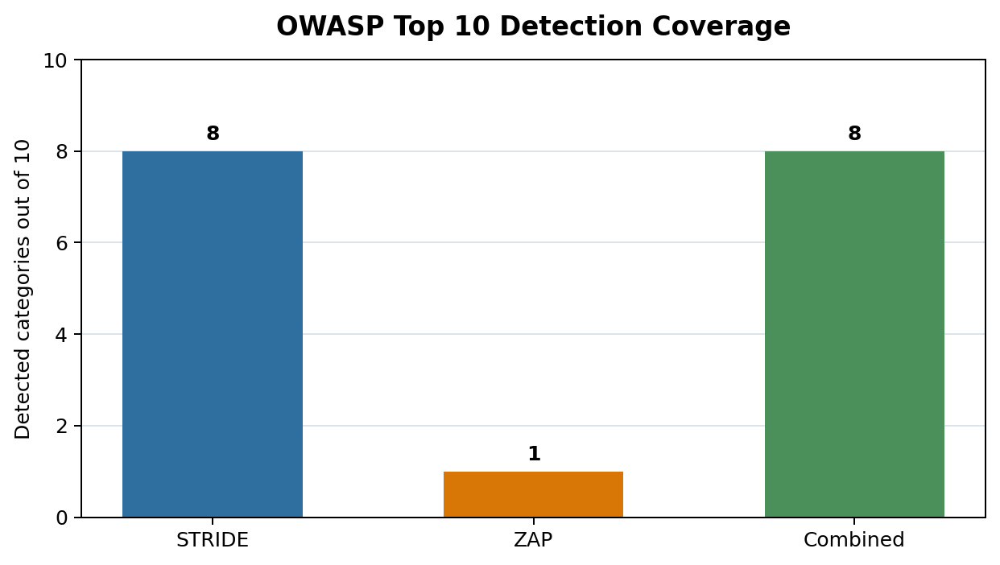
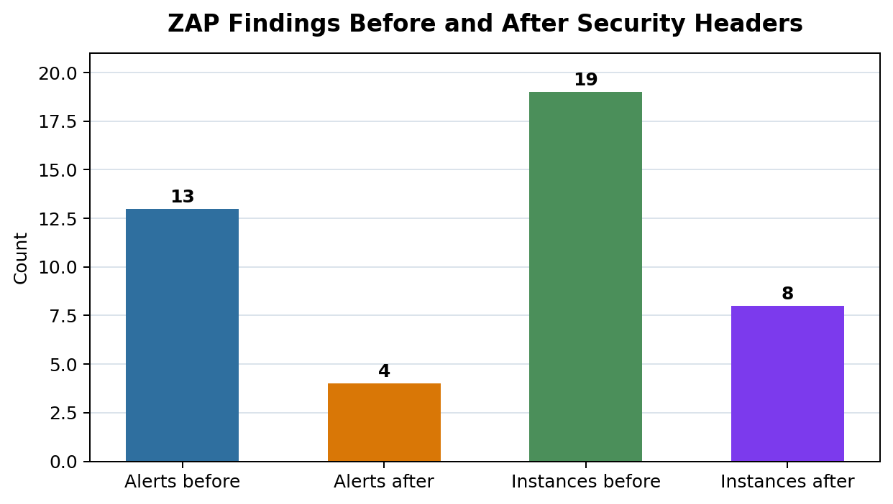
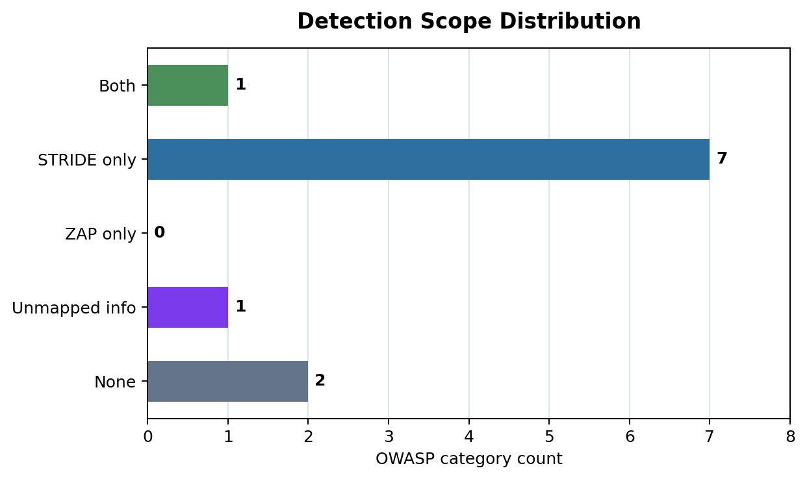

화상회의 아키텍처 환경에서 STRIDE 위협 모델링과 동적 자동화 진단 도구(OWASP ZAP)의 취약점 탐지 효과성 비교 분석
Kim Geun Hyeong1, Kim Si Hwan2, Kim Su Chang3, Jeong Jin Hyeok4, Lee Taek5
김근형1, 김시환2, 김수창3, 정진혁4, 이택5
1 Student, Division of Computer Science and Engineering, Sun Moon University, Korea, dko07160@sunmoon.ac.kr
2 Student, Division of Computer Science and Engineering, Sun Moon University, Korea, hwan0212@sunmoon.ac.kr
3 Student, Division of Computer Science and Engineering, Sun Moon University, Korea, alehwmxjfb@sunmoon.ac.kr
4 Student, Division of Computer Science and Engineering, Sun Moon University, Korea, jinhyeok0421@sunmoon.kr
5 Professor, Division of Computer Science and Engineering, Sun Moon University, Korea, Comtaek@gmail.com
비대면 협업 환경의 확산으로 화상회의 시스템은 인증, 세션, 미디어 스트리밍, 녹화 저장소, 외부 연동 기능을 함께 포함하는 복합 웹 서비스가 되었다. 이러한 시스템은 일반 웹 애플리케이션 취약점뿐 아니라 회의방 권한, WebRTC 미디어 경로, ICE 후보를 통한 IP 노출, 그룹 키 갱신과 같은 구조적 위협을 함께 가진다. 본 연구는 화상회의 아키텍처를 대상으로 설계 기반 STRIDE 위협 모델링과 동적 자동화 진단 도구인 OWASP ZAP의 취약점 탐지 효과성을 비교하였다. 실험 A에서는 Microsoft Threat Modeling Tool 기반으로 정리한 STRIDE 위협 9건과 DREAD 점수를 입력 데이터로 사용하였다. 실험 B에서는 보안 헤더가 적용된 동일 웹 인터페이스를 Docker 기반 OWASP ZAP Baseline Scan으로 재진단하여 경고 4건, 인스턴스 8건을 수집하였다. 두 결과는 OWASP Top 10:2021 기준으로 매핑하였다. 분석 결과 STRIDE는 8개 카테고리(80.0%)를 포괄했으며, ZAP은 주로 A05 Security Misconfiguration 1개 카테고리(10.0%)에 집중되었다. 공통 탐지 영역은 A05였고, STRIDE는 A01, A02, A03, A04, A07, A08, A09에서 단독 탐지 효과를 보였다. ZAP 결과 중 직접 취약점으로 보기 어려운 정보성 경고는 1건으로 분류하였다. 또한 보안 헤더 적용 전 1차 ZAP 결과(13건, 19개 인스턴스)와 비교하면 경고 수가 감소하여, 자동화 진단이 구현 보완 효과를 반복적으로 확인하는 데 유용함을 보였다.
두 방법의 장단점과 표현 가능 범위도 함께 비교하여, STRIDE 분석은 설계·구조 위험 설명에, ZAP 진단은 실제 구현 상태 검증에 강점이 있음을 정리하였다. 추가 보조 검증에서는 Docker 기반 Jitsi Meet self-hosted 환경에서 인증, JWT, ICE 후보, Nmap, Jibri 기동 상태를 확인하여 정량 비교 결과의 운영 해석 범위를 보완하였다.
핵심어: 화상회의, STRIDE, OWASP ZAP, 위협 모델링, OWASP Top 10, WebRTC
화상회의 시스템은 원격 수업, 비대면 회의, 기업 협업, 온라인 행정 업무에서 일상적으로 사용되고 있다. 사용자는 브라우저 또는 모바일 앱을 통해 회의방에 접속하고, 인증 서버는 사용자 계정과 토큰을 관리하며, 애플리케이션 서버는 회의방과 권한을 제어한다. 또한 WebRTC 기반 스트리밍 서버는 영상과 음성 데이터를 전달하고, 녹화 저장소는 회의 기록을 보관한다. 이처럼 화상회의 서비스는 일반 웹 서비스보다 더 복잡한 신뢰 경계와 데이터 흐름을 가진다.
기존 보안 점검은 소스 코드 취약점 또는 웹 취약점 스캐너 결과에 집중하는 경우가 많다. 그러나 화상회의 환경에서는 실행 중인 웹 화면에서 관찰되는 보안 헤더 누락 외에도 회의 링크 유출, WebRTC ICE 후보 노출, 호스트 권한 혼동, 그룹 키 갱신 실패와 같은 설계 단계 위협이 중요하다. 반대로 STRIDE와 같은 설계 기반 분석만으로는 실제 응답 헤더, 브라우저 보안 정책, 서버 버전 노출, 캐시 정책과 같은 구현 상태를 반복적으로 검증하기 어렵다.
본 연구는 제한된 로컬 실습 환경에서 재현 가능한 실증 비교를 목표로 한다. 새로운 보안 알고리즘을 제안하기보다, 오픈소스 화상회의 환경과 자동화 도구를 활용하여 STRIDE 위협 모델링과 OWASP ZAP 동적 진단의 탐지 범위 차이를 정량적으로 비교한다. 연구 질문은 STRIDE와 OWASP ZAP이 동일한 취약점 범위를 탐지하는지, STRIDE가 ZAP이 탐지하기 어려운 설계·구조적 위협을 식별하는지, ZAP이 STRIDE 분석만으로 확인하기 어려운 실행 환경 취약점을 탐지하는지, 두 방법을 OWASP Top 10 기준으로 결합할 때 보완 우선순위 판단에 도움이 되는지를 중심으로 구성하였다.
WebRTC 보안 연구는 브라우저 기반 실시간 통신에서 중간자 공격, 통신 변조, 미디어 경로 보호가 중요함을 보여준다[1]. WebRTC IP 주소 노출 연구는 ICE 후보 수집 과정에서 사용자의 사설 또는 공인 IP가 노출될 수 있음을 설명하며, 고프라이버시 회의에서 P2P 제한과 TURN relay 정책이 필요함을 뒷받침한다[2]. 화상회의 개인정보 연구는 공개 회의 화면, 얼굴, 표시명, 회의 링크가 재식별 위험으로 이어질 수 있음을 분석하였다[3]. 또한 P2P 기반 미디어 전송 구조에서는 신뢰하지 않는 피어에 의한 오염, 자원 점유, IP 노출 가능성이 제기된다[4].
위협 모델링 측면에서 STRIDE는 Spoofing, Tampering, Repudiation, Information Disclosure, Denial of Service, Elevation of Privilege의 여섯 가지 관점으로 시스템 위협을 분류한다. 화상회의 아키텍처에서는 사용자, 브라우저 클라이언트, 인증 서버, 애플리케이션 서버, 스트리밍 서버, 데이터베이스, 녹화 저장소 사이의 데이터 흐름을 기준으로 STRIDE를 적용할 수 있다. OWASP ZAP은 실행 중인 웹 애플리케이션의 응답과 요청을 분석하여 보안 헤더, 쿠키, CSP, XSS 가능성 등을 탐지하는 동적 진단 도구이다. 따라서 두 방법은 탐지 시점과 탐지 대상이 다르며, 이를 같은 기준으로 비교하기 위해 본 연구는 OWASP Top 10:2021을 공통 분류 체계로 사용한다.
실험 대상은 WebRTC 기반 화상회의 아키텍처를 모사한 로컬 실습 환경이다. 분석 범위는 사용자, 브라우저 클라이언트, 인증 기능, 세션 관리, 회의방 권한, 미디어 경로, 개인정보 처리, 보안 헤더 설정을 포함한다. 오픈소스 Jitsi Meet 소스는 화상회의 환경 이해와 실습 절차 정리에 활용하였고, 실제 정량 비교는 로컬 실습 코드와 OWASP ZAP Baseline Scan 결과를 중심으로 수행하였다.
또한 2026년 6월 3일 Docker 기반 Jitsi Meet self-hosted 환경에서 웹, Prosody, Jicofo, JVB, Jibri 컨테이너 기동, 인증/JWT, ICE 후보, Nmap, ZAP Baseline 결과를 보조 검증하였다. 해당 검증은 본 논문의 핵심 정량 지표에는 합산하지 않고, STRIDE-ZAP 비교 결과를 실제 운영형 구성요소에 적용할 때의 해석 범위와 남은 한계를 점검하는 자료로 사용하였다.
실험 A에서는 Microsoft Threat Modeling Tool 기반 STRIDE 결과를 사용하였다. 해당 자료는 Jitsi Meet DFD를 바탕으로 Nginx, Prosody, Jicofo, JVB, Jigasi, User/Session Data Store를 주요 구성요소로 두고 Spoofing, Tampering, Repudiation, Information Disclosure, Denial of Service, Elevation of Privilege 위협을 도출하였다. 각 위협은 DREAD 기준의 Damage, Reproducibility, Exploitability, Affected Users, Discoverability 5개 항목을 10점 척도로 부여하였다. 최종 STRIDE 입력 데이터는 reports/stride/stride_findings.json에 9건으로 정리하였다.
실험 B에서는 OWASP ZAP Baseline Scan으로 로컬 웹 인터페이스를 진단하였다. 1차 기준선 결과는 reports/zap/baseline/zap-report.json, reports/zap/baseline/zap-report.md, reports/zap/baseline/zap-report.html로 저장하였다. 이후 CSP, X-Frame-Options, X-Content-Type-Options, Referrer-Policy, Permissions-Policy, Cross-Origin 계열 헤더를 적용한 로컬 서버를 Docker 환경에서 재스캔하고, 결과를 reports/zap/secure/zap-secure-report.json, reports/zap/secure/zap-secure-report.md, reports/zap/secure/zap-secure-report.html로 저장하였다. 본문의 정량 비교는 보안 헤더 적용 후 재스캔 결과를 기준으로 하였다. 수집된 ZAP 경고는 plugin ID, 위험도, confidence, 인스턴스 수를 기준으로 정리하고, OWASP Top 10:2021 카테고리로 매핑하였다. 직접 취약점으로 보기 어려운 정보성 경고는 오탐 후보로 별도 분류하였다.
추가 실행 증거로 2026년 6월 1일 보안 헤더 적용 서버를 127.0.0.1:18112에서 실행하고 HEAD 요청 응답과 로컬 포트 수신 상태를 확인하였다. 해당 증거는 reports/evidence/execution_evidence_2026-06-01.md에 저장하였으며, CSP, X-Frame-Options, X-Content-Type-Options, Permissions-Policy, Cross-Origin 계열 헤더와 TcpTestSucceeded=True 결과를 포함한다.
두 실험 결과는 [표 1]의 지표로 비교하였다.
[표 1] STRIDE와 OWASP ZAP 비교 지표
[Table 1] Comparison Metrics for STRIDE and OWASP ZAP
| 지표 | 설명 |
|---|---|
| 탐지 건수 | STRIDE 위협 수와 ZAP 경고 수 |
| OWASP Top 10 커버리지 | 각 방법이 탐지한 OWASP 카테고리 수 |
| 중복 탐지 | STRIDE와 ZAP가 모두 탐지한 카테고리 |
| 단독 탐지 | 한 방법에서만 탐지된 카테고리 |
| 오탐 분석 | ZAP 경고 중 실제 취약점으로 보기 어려운 항목 |
| 위험도 점수 | STRIDE DREAD 합계와 ZAP 위험도 가중 점수 |
[표 2] STRIDE와 OWASP ZAP 탐지 결과 요약
[Table 2] Summary of Detection Results from STRIDE and OWASP ZAP
| 지표 | STRIDE | OWASP ZAP | 결합 해석 |
|---|---|---|---|
| 유효 탐지/경고 수 | 9건 | 4건 | ZAP 인스턴스 기준 8건 |
| OWASP Top 10 커버리지 | 8/10, 80.0% | 1/10, 10.0% | 결합 커버리지 8/10, 80.0% |
| 중복 탐지 카테고리 | A05 포함 | A05 포함 | 보안 설정 오류 영역에서 공통 탐지 |
| 단독 탐지 카테고리 | A01, A02, A03, A04, A07, A08, A09 | 없음 | ZAP 단독 Top 10 카테고리는 없음 |
| 미탐지 카테고리 | A06, A10 | 다수 | 의존성 취약점과 SSRF는 별도 실험 필요 |
| 오탐 후보 | 0건 | 1건 | 10109 Modern Web Application |
| 위험도 점수 | DREAD 합계 347 | 가중 위험 점수 10 | STRIDE는 설계 위험 우선순위화에 유리 |
[그림 1] OWASP Top 10 탐지 커버리지 비교
[Figure 1] Comparison of OWASP Top 10 Detection Coverage

보안 헤더 적용 전 1차 ZAP Baseline Scan에서는 경고 13건과 인스턴스 19건이 수집되었다. 보안 헤더가 적용된 서버를 Docker 기반 ZAP으로 재스캔한 결과 경고는 4건, 인스턴스는 8건으로 감소하였다. 이는 ZAP이 STRIDE가 제시한 설계 위협을 대체하지는 못하지만, 보안 헤더와 브라우저 정책 같은 구현 보완의 효과를 반복적으로 검증하는 데 적합함을 보여준다.
[그림 2] 보안 헤더 적용 전후 ZAP 경고 변화
[Figure 2] Changes in ZAP Alerts Before and After Security Header Application

본 연구의 STRIDE 수동 분석은 DFD 작성, STRIDE 분류, DREAD 점수 산정을 포함해 약 60~90분 범위로 정리하였다. 분당 지표는 중앙값인 75분을 사용했으며, ZAP Baseline Scan은 Docker 실행 옵션 기준 5분으로 기록하였다.
[표 3] 실험 A/B 통계 비교표
[Table 3] Statistical Comparison of Experiment A and Experiment B
| 통계 항목 | 실험 A: STRIDE | 실험 B: OWASP ZAP | 해석 |
|---|---|---|---|
| 유효 분석 건수 | 9건 | 4건 | B안은 인스턴스 기준 8건으로 관찰됨 |
| OWASP Top 10 커버리지 | 8/10, 80.0% | 1/10, 10.0% | A안이 더 넓은 보안 범위를 설명함 |
| 공통 탐지 카테고리 | 1개 | 1개 | 두 방법 모두 A05를 탐지함 |
| 단독 탐지 카테고리 | 7개 | 0개 | A안은 구조적 위협을 폭넓게 식별함 |
| 미탐지 카테고리 | A06, A10 | A05 외 대부분 | B안은 실행 웹 응답 중심으로 범위가 좁음 |
| 오탐 후보 | 0건 | 1건 | B안의 정보성 경고는 해석 검토가 필요함 |
| 위험도 점수 | DREAD 합계 347 | 가중 위험 점수 10 | 점수 체계가 달라 직접 크기 비교보다 우선순위 참고용으로 사용함 |
| 분석 소요시간 | 60~90분, 지표 산정값 75분 | 5분 | B안은 짧은 시간 안에 반복 측정이 가능함 |
| 반복 측정성 | 분석자 재검토 필요 | 5분 스캔, 0.80건/분 | B안은 보완 후 재검증에 유리함 |
[표 4] OWASP Top 10 기준 탐지 범위 매트릭스
[Table 4] Detection Scope Matrix Based on OWASP Top 10
| OWASP 카테고리 | STRIDE | ZAP 경고 | ZAP 인스턴스 | 탐지 범위 |
|---|---|---|---|---|
| A01 Broken Access Control | 5 | 0 | 0 | STRIDE only |
| A02 Cryptographic Failures | 1 | 0 | 0 | STRIDE only |
| A03 Injection | 1 | 0 | 0 | STRIDE only |
| A04 Insecure Design | 2 | 0 | 0 | STRIDE only |
| A05 Security Misconfiguration | 2 | 3 | 7 | Both |
| A06 Vulnerable and Outdated Components | 0 | 0 | 0 | None |
| A07 Identification and Authentication Failures | 3 | 0 | 0 | STRIDE only |
| A08 Software and Data Integrity Failures | 1 | 0 | 0 | STRIDE only |
| A09 Security Logging and Monitoring Failures | 1 | 0 | 0 | STRIDE only |
| A10 Server-Side Request Forgery | 0 | 0 | 0 | None |
| Unmapped | 0 | 1 | 1 | Unmapped ZAP informational |
[그림 3] OWASP Top 10 기준 탐지 범위 분포
[Figure 3] Detection Scope Distribution Based on OWASP Top 10

ZAP 단독 OWASP Top 10 카테고리는 없었으나, OWASP Top 10에 직접 매핑되지 않는 정보성 경고 1건이 존재하였다. 따라서 본 연구에서는 해당 항목을 별도 오탐 후보로 분리하고, ZAP의 단독 Top 10 탐지 범위에는 포함하지 않았다.
ZAP 재스캔 결과에서 A05 Security Misconfiguration에 매핑된 항목은 10055 CSP: Meta Policy Invalid Directive와 10049 Non-Storable Content였다. 10055는 HTTP 응답 헤더와 HTML meta 정책이 동시에 존재하거나 일부 CSP 지시어가 브라우저 정책상 충분하지 않을 때 발생하며, 화상회의 화면의 스크립트·프레임 제어와 연결되므로 유효 경고로 판단하였다. 10049는 정적 파일 캐시 정책에 따라 영향도가 달라지는 환경 의존 경고로 분류하였다. 10109 Modern Web Application은 앱 구조 식별 신호에 가까워 직접 취약점으로 보기 어려우므로 오탐 후보로 분류하였다. 보안 헤더 적용 전에는 10020, 10021, 10038, 10063, 90004 등 헤더 누락 경고가 추가로 나타났으나, 재스캔에서는 해당 항목이 PASS로 전환되었다.
STRIDE는 화상회의 아키텍처의 신뢰 경계와 데이터 흐름을 기준으로 위협을 도출하기 때문에 회의방 접근통제, JWT 권한 혼동, WebRTC 미디어 경로, ICE 후보 IP 노출, 그룹 키 갱신, 로그 부재와 같은 구조적 위험을 폭넓게 식별하였다. 반면 ZAP은 실행 중인 웹 인터페이스에서 실제 응답을 관찰하므로 CSP, X-Frame-Options, X-Content-Type-Options, Permissions-Policy, Cross-Origin 정책과 같은 구현 상태를 구체적으로 탐지하였다.
두 방법이 공통으로 탐지한 영역은 A05 Security Misconfiguration이었다. 이는 STRIDE의 정보 노출 및 서비스 거부 시나리오가 보안 설정 오류와 연결되고, ZAP의 경고도 대부분 보안 헤더와 브라우저 정책 누락에 집중되었기 때문이다. 그러나 STRIDE가 식별한 A01, A02, A03, A04, A07, A08, A09 범위는 ZAP Baseline Scan에서 직접 탐지되지 않았다. 따라서 두 방법은 대체 관계가 아니라 서로 다른 계층의 취약점을 보완적으로 탐지한다고 해석할 수 있다.
STRIDE 분석과 ZAP 진단은 같은 화상회의 대상을 다루지만, 보여주는 정보의 층위가 다르다. STRIDE는 설계도와 데이터 흐름을 기준으로 "발생 가능한 위협"을 넓게 설명하고, ZAP은 실행 중인 웹 인터페이스에서 "현재 관찰되는 구현 상태"를 좁지만 구체적으로 보여준다. 따라서 논문에서는 두 방법을 우열 관계로 해석하기보다, STRIDE는 보안 검토 범위 설정과 위험 우선순위화, ZAP은 구현 보완 확인과 반복 검증에 적합한 방법으로 구분하였다.
[표 5] 실험 A/B 장단점 및 표현 가능 범위
[Table 5] Strengths, Limitations, and Explanation Scope of Experiment A and B
| 구분 | 장점 | 단점 | 논문에서 나타낼 수 있는 범위 |
|---|---|---|---|
| 실험 A: STRIDE 위협 모델링 | 자동화 도구가 탐지하기 어려운 권한 상승, 부인 방지 실패, 데이터 잔류 지점, 암호화 누락 구간을 구조적으로 추론할 수 있음 | 구현 단계의 실제 코딩 실수는 직접 탐지하기 어렵고, 분석자의 판단에 따라 초점이 달라질 수 있음 | 설계 단계에서 예상되는 논리적 위험, 서버 간 통신 규약, OWASP 카테고리 매핑, DREAD 기반 우선순위, 보완 방향 |
| 실험 B: OWASP ZAP 동적 진단 | 실제 실행 중인 웹 응답을 자동 수집하므로 보안 헤더, CSP, 캐시 정책, 브라우저 보안 정책 적용 여부를 반복 검증할 수 있음 | Baseline Scan 범위가 웹 인터페이스 중심이어서 회의방 권한 모델, WebRTC ICE 정보, TURN/XMPP/JVB 내부 위협은 충분히 드러나지 않음 | 현재 배포 상태에서 관찰되는 설정 오류, 경고 인스턴스, 보안 헤더 보완 전후 변화, 오탐 후보 |
STRIDE 분석의 세부 장점은 DFD를 기반으로 여러 서버와 컴포넌트가 데이터를 주고받는 구조를 먼저 그린 뒤 위험을 추론한다는 점이다. 이 과정에서 Nginx, Prosody, Jicofo, JVB, 저장소와 같은 구성요소 사이의 신뢰 경계와 통신 규약을 함께 검토할 수 있으며, 단순한 웹 응답 스캔만으로는 드러나기 어려운 권한 상승 가능성, 행위 부인 가능성, 암호화가 빠진 내부 통신 구간, 설계자가 예상하지 못한 데이터 잔류 지점을 확인하는 데 유리하였다.
반면 A안은 설계 자료와 분석자의 해석을 바탕으로 하기 때문에 실제 코드 구현 과정에서 발생한 버그나 배포 설정 실수를 직접 증명하지는 못한다. 또한 자동화 도구처럼 결과의 유효성을 즉시 검증하는 절차가 부족하므로, 잘못된 전제에 따라 중요도가 낮은 위협에 초점이 맞춰질 가능성이 있다. 특히 시스템 규모가 커질수록 DFD 작성, STRIDE 분류, DREAD 점수 산정까지의 복잡도가 증가하며, 정적인 설계 자료만으로는 운영 중 발생하는 트래픽 패턴 변화나 네트워크 환경 변화를 실시간으로 반영하기 어렵다.
이 비교를 통해 A안은 "어떤 위험이 존재할 수 있는가"를 설명하는 데 적합하고, B안은 "현재 구현에서 어떤 설정 문제가 실제로 보이는가"를 확인하는 데 적합함을 알 수 있다. 특히 본 실험에서는 A안이 OWASP Top 10 기준 8개 영역을 설명한 반면, B안은 A05 영역에 집중되었다. 이는 화상회의 보안 평가에서 설계 검토와 자동화 스캔을 함께 사용해야 논문의 결론이 더 균형 있게 제시된다는 점을 뒷받침한다.
정량 비교와 별도로 Docker 기반 Jitsi Meet self-hosted 환경에서 웹 UI, Prosody, Jicofo, JVB, Jibri를 실행하고 인증, JWT, ICE 후보, Nmap, ZAP Baseline 결과를 확인하였다. 이 보조 검증은 STRIDE-ZAP 정량 비교의 수치를 바꾸기 위한 실험이 아니라, 로컬 실습 웹 클라이언트 중심 결과를 실제 화상회의 스택에 적용할 때 어떤 운영 쟁점이 남는지 확인하기 위한 보완 자료이다.
[표 6] Jitsi Meet 보조 검증 요약
[Table 6] Supplementary Validation Summary for Jitsi Meet
| 검증 영역 | 확인 결과 | 논문 해석 |
|---|---|---|
| 웹/ZAP/Nmap | 웹 포트 8000/tcp, 8443/tcp와 JVB 미디어 포트 10000/udp를 확인했고, ZAP Baseline에서 CSP, clickjacking, COOP/COEP 계열 보강 필요 경고가 남음 |
ZAP은 운영 웹 응답과 브라우저 보안 정책 보완 여부를 반복 검증하는 데 유용함 |
| 인증/JWT/로비 | 호스트 전 게스트 대기, 유효 JWT 사용자의 방 생성, 호스트 입장 후 게스트 참여를 확인했으며 JWT 인증 성공과 관리자 권한이 항상 동일하지 않음을 관찰함 | STRIDE가 식별한 회의방 권한과 인증 흐름 위협은 실제 운영 설정 검증으로 이어져야 함 |
| ICE/TURN | 브라우저 ICE 후보에서 host 후보가 관찰되었고 relay 후보는 관찰되지 않음 |
고프라이버시 환경에서는 TURN relay 강제와 P2P 제한 검증이 필요함 |
| Jibri | Jibri 컨테이너 health OK와 Jicofo available 감지를 확인했지만 recorder 도메인 오류와 녹화 UI 미노출이 남음 | 녹화 기능은 기동 여부만으로 충분하지 않고 권한, recorder VirtualHost, 실제 파일 생성까지 end-to-end 검증해야 함 |
본 연구는 화상회의 아키텍처를 대상으로 STRIDE 위협 모델링과 OWASP ZAP 동적 자동화 진단의 취약점 탐지 효과성을 OWASP Top 10 기준으로 비교하였다. 실험 결과 STRIDE는 정리된 9건의 설계 위협을 통해 8개 OWASP 카테고리를 포괄하였고, OWASP ZAP 재스캔은 4건의 경고와 8건의 인스턴스를 통해 주로 A05 Security Misconfiguration을 탐지하였다. STRIDE는 자동화 스캔이 놓치기 쉬운 권한 상승, 행위 부인 가능성, 데이터 잔류 지점, 암호화 누락 구간을 구조적으로 식별하는 데 강점이 있었다. 반면 ZAP은 실행 중인 웹 환경의 보안 헤더와 브라우저 정책 점검 및 보완 후 재검증에 강점이 있었다.
따라서 화상회의 보안 평가는 STRIDE와 ZAP 중 하나만 선택하기보다, STRIDE로 위협 범위를 먼저 정의하고 ZAP으로 실제 구현과 배포 설정을 반복 검증하는 하이브리드 프로세스로 수행하는 것이 적합하다. 본 연구의 핵심 한계는 STRIDE-ZAP 정량 비교가 로컬 실습용 화상회의 웹 클라이언트와 ZAP Baseline Scan 결과를 중심으로 수행되었다는 점이다. 다만 Jitsi Meet Docker lab에서 인증, JWT, ICE 후보, Nmap 포트 노출, JVB/Jicofo/Jibri 기동을 보조 검증하여 실제 운영형 구성요소와 연결되는 위험을 추가로 확인하였다. 그럼에도 장기 부하, TURN relay 강제, 녹화 파일 생성, 모바일 앱, 운영망 로그와 개인정보 정책까지 일반화하려면 별도 운영 환경에서 추가 검증해야 한다.
[1] B. Feher, L. Sidi, A. Shabtai, R. Puzis, and L. Marozas, "WebRTC security measures and weaknesses," International Journal of Internet Technology and Secured Transactions, vol. 8, no. 1, pp. 78-102, 2018. Available from: <https://doi.org/10.1504/IJITST.2018.092138>
[2] N. M. Al-Fannah, "One leak will sink a ship: WebRTC IP address leaks," 2017 International Carnahan Conference on Security Technology (ICCST), pp. 1-5, 2017. Available from: <https://doi.org/10.1109/CCST.2017.8167801>
[3] D. Kagan, G. F. Alpert, and M. Fire, "Zooming Into Video Conferencing Privacy," IEEE Transactions on Computational Social Systems, vol. 11, no. 1, pp. 933-944, 2024. Available from: <https://doi.org/10.1109/TCSS.2022.3231987>
[4] S. Tang, E. Alowaisheq, X. Mi, Y. Chen, X. Wang, and Y. Dou, "Stealthy Peers: Understanding Security and Privacy Risks of Peer-Assisted Video Streaming," Proceedings - 2024 54th Annual IEEE/IFIP International Conference on Dependable Systems and Networks (DSN), pp. 324-337, 2024. Available from: <https://doi.org/10.1109/DSN58291.2024.00041>
[5] OWASP Foundation, OWASP Top 10:2021, (2021). Available from: <https://owasp.org/Top10/>
[6] OWASP Foundation, OWASP Zed Attack Proxy Documentation, (2026). Available from: <https://www.zaproxy.org/docs/>
[7] Microsoft, Microsoft Threat Modeling Tool Threats, (2026). Available from: <https://learn.microsoft.com/en-us/azure/security/develop/threat-modeling-tool-threats>
[8] Jitsi, Jitsi Meet Handbook, (2026). Available from: <https://jitsi.github.io/handbook/>